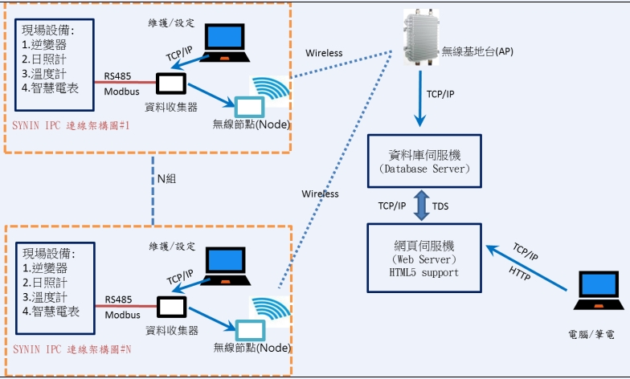

智慧家庭/電網

導入HomePlug技術 智慧家庭生活輕鬆實現 當今的智慧家庭正持續快速發展，並且有許多特性非常適合搭配HomePlug技術。過去的家庭自動化與管理通常建立在獨立的家庭控制網路上，具有獨自的通訊協定、控制主控台及應用程式，但隨著智慧型手機與平板電腦問世，越來越多的消費者希望透過行動裝置控制智慧家庭，離開家時也能持續監控家中狀態。顯而易見的解決方案是結合家庭的寬頻網路與家庭控制網路，使所有裝置及智慧家庭中的任何地點皆能無縫連線，也就是透過物聯網(IoT)結合家中的高速寬頻網路(圖)。 由於一般家庭轉變為媒體中心，在家中的電視或電腦上播放串流視訊、線上遊戲、高畫質電視(HDTV)，以及多種裝置執行高頻寬應用程式將成為常態，因此必須有穩定的家庭網路提供支援，為家庭網路帶來極大的壓力。雖然無線可為家庭帶來極佳的行動性，但是在遠離路由器時容易發生問題，特別是需求較高的應用，例如線上遊戲或串流視訊。 HomePlug為智慧聯網家庭提供互通的解決方案，而HomePlug技術的成本低，非常適合用於智慧型裝置與家庭控制應用。目前已有數百萬名消費者體驗了HomePlug可靠的技術，以及娛樂級HD視訊、遊戲及網際網路存取之高頻寬傳輸的優點，也已經有數十家服務供應商採用。HomePlug GP/AV2在涵蓋範圍與效能皆有大幅度的提升。為因應行動裝置成為消費者「數位生活」控制器的明確趨勢，HomePlug技術無縫整合無線區域網路(Wi-Fi)，確保整個家庭的有線/無線高速寬頻及連線能力。 HomePlug技術助陣 智慧能源/智慧電網效率大增 智慧電網利用二十一世紀的資訊科技，有效將電力從供應商供應至企業及消費者，既可靠又安全，同時允許增加使用可再生能源。智慧電網管理系統搭配先進的智慧電網基礎建設，可在電力公司與一般家庭裝置之間進行雙向數位通訊。 智慧電網部署有幾個關鍵要件，例如在各種裝置間提供可靠的網路、與既有消費性家庭網路技術的相容性與互通性、無所不在的覆蓋範圍以連接家庭環境中所有使用電力的裝置、低成本與低功率的網路介面，可內嵌於任何裝置、有線與無線智慧電網應用間的交叉相容性、穩固的標準與第三方認證機制，確保連線裝置之間的整體相容性與毋須重新配線，使用現有電線即可涵蓋整個家庭的能力。 HomePlug技術改良的監視與控制功能提供使用者提升能源效率的工具，例如依照使用時段定價，藉此降低使用者的成本，同時有助於平衡電力負載。它也有助於消費者參與尖峰時段關閉電器的計畫，政府透過電價鼓勵政策，讓智慧電網在需求尖峰時段自動關閉非必要裝置的電源。此外，對電力公司而言，自動化抄表功能可節省人事成本，因此，電力公司及製造商皆希望採用標準通訊網路技術，不僅協助消費者及企業監控並降低能源消耗，同時可確保標準、互通的設計發展計畫。